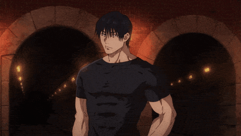

Jujutsu Kaisen
Uma verdadeira rinha entre feiticeiros.


Uma verdadeira rinha entre feiticeiros.
Yuji Itadori (虎杖悠仁) É o protagonista principal de Jujutsu Kaisen. Ele está no primeiro ano da Escola Secundária Jujutsu da Prefeitura de Tóquio.
SABER MAISMegumi Fushiguro (伏 ふ し 黒 ぐ ろ 恵 め ぐ み Fushiguro Megumi) é a deuteragonista da série Jujutsu Kaisen. Ele é aluno do primeiro ano do Colégio Jujutsu e também descendente da Família Zenin.
SABER MAISNobara Kugisaki (釘 く ぎ 崎 さ き 野 の 薔 ば 薇 ら Kugisaki Nobara) é o tritagonista de Jujutsu Kaisen. Ela está no primeiro ano da Escola Secundária Jujutsu da Prefeitura de Tóquio estudando com Satoru Gojo ao lado de Yuji e Megumi.
SABER MAISSatoru Gojo (五 ご 条 じ ょ う 悟 さ と る Gojō Satoru) é um dos protagonistas de Jujutsu Kaisen. Ele é professor da Escola Secundária Jujutsu da Prefeitura de Tóquio.
SABER MAISKento Nanami (七なな海み建けんと) É um personagem coadjuvante importante em Jujutsu Kaisen. Ele foi ex-aluno da Tokyo Jujutsu High, onde foi aluno do primeiro ano de Satoru Gojo e Suguru Geto.
SABER MAIS